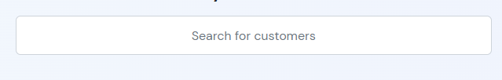

“SuSearch” Documentation by “Suleiman” v1.0
SuSearch - A Fuzzy JavaScript Search Plugin
Created: 19/10/2022
By: Suleiman
Email: soleman630@gmail.com
Thank you for purchasing my theme. If you have any questions that are beyond the scope of this help file, please feel free to email via my user page contact form here. Thanks so much!
Table of Contents
- What Is SuSearch
- Dependencies
- HTML Structure
- Import SuSearch
- Set SuSearch Source
- Set SuSearch Callbacks
- Set Dropdown Items Value & Text
- Set Search Keys
- Set Having Options
- Set Global Settings
- Set Search Field Settings
- Set Dropdown Settings
- Initialize SuSearch
Available Links
- Try & Playground: Playground
- Demo #1: Quick Guide
- Demo #2: Phone Search Demo
- Demo #3: Users Search Demo
- Demo #4: Products Search Demo
A) What Is SuSearch - top
SuSearch is a javascript plugin used to search in a large amount of data based on settings & conditions.
It can be used in any web application that needs to implement a fuzzy search.
SuSearch will show search results in a beautiful dropdown (will be described later in document)
It is worth to mention that SuSearch uses callbacks to handle actions.
Callbacks are important in each project, It handles user actions and send it to a callback function to handle it.
Each time you type/search SuSearch will handle these data and send it to a callback you set (will be described later in document).
You'd ask your self "What Is Fuzzy Search ?"
Well the answer for that is simple, A fuzzy search is a technique to search in data item by item to get the best matching results.
Examples:
- Search by phone number in a large data of numbers and phone number should be active = true.
- Search for customers that their name ends with "smith" and age bigger than 37.
- Search in products by product barcode and the product price should be less than $1,000.
B) Dependencies - top
SuSearch was built using jQuery and uses the styling of Bootstrap.
So make sure to include these libraries in your project (this will be described later in this document).
C) HTML Structure - top
Adding SuSearch to your project is simple, You'll need to include the following files:
- Bootstrap - line 6
- SuSearch style - line 8
- SuSearch parent div (search field will be automatically added inside it) - line 12
- jQuery library - line 16
- Bootstrap library - line 18 + 19
- Script that configures SuSearch (type of module) - line 21
File: index.html
D) Import SuSearch - top
In order to Import SuSearch you will need to create a script.js file (have a look at HTML Structure -> image at line 21).
This line will import SuSearch.
File: script.js
E) Set SuSearch Source - top
In order to set SuSearch source you'll need a data object to pass to SuSearch (Tested with more than +3,000 data items).
The data you pass should be object only and NOT array.
To set SuSearch source simple use: line 17
File: script.js
F) Set SuSearch Callbacks - top
Since SuSearch uses callbacks, You'll need to set the callbacks before using SuSearch.
Available callbacks
- Callback when there are no search results.
- Callback when user pick item from dropdown.
- Callback when user click "Search All Results" from the dropdown.
Results Found
No Results
To set callbacks use the following code:
Create your callbacks functions
This code can be found in: /Document/codes/set_callbacks.js
Pass callbacks to SuSearch
This code can be found in: /Document/codes/set_callbacks.js
G) Set Dropdown Items Value & Text - top
In order to for callbacks to work you'll need to set dropdown items values & texts.
The id is for item value and name is for item text to de displayed for user.

This code can be found in: /Document/codes/set_dropdown_item_value_and_text.js
In this example we sent an object of customers, The customer key is id and the displayed text inside the dropdown is name.
The value and text you set will be passed to the callback functions
This means that on each item click it will trigger the callback and send:
- id as _item_value
- name as _item_text
- whole object as _item_data
H) Set Search Keys - top
In order to search inside the object you'll need to set the Search Keys
Search Keys are basically keys inside your data source.
And on each search you perform SuSearch will do a search based on the Search Keys you set
.In this example SuSearch will search only by id and name, This means if we wrote 0 or John it will show the first result.
This code can be found in: /Document/codes/set_search_keys.js
Please note that the Search Keys can be changed to any key you want (case sensitive).
I) Set Having Options - top
Having options is important in case you need to search for items that have a specific key.
Setting having options can be done at any time, For example you can set the having option when a user selects item from select element
- key: the key inside your source
- operation: can be one of the following operations: '==', '===', '!=', '!==', '>', '>=', '<', '<=' (without quotes)
- value: the value you want
For example, you want to search for all customers that their age is bigger than 35.
Only John Smith will be displayed because his age is bigger than 35.
This code can be found in: /Document/codes/set_having_options.js
For example, you want to search for all customers that their age is smaller/equal to 30 and is female.
Only Hanna Hayner will be displayed because his age is smaller/equal to 30 and is female.
This code can be found in: /Document/codes/set_having_options.js
Please note that setting having option can happen at any time.
For example: You want to search by specific customer type when user uses select element.
This code can be found in: /Document/codes/set_having_options_select_example.js
J) Set Global Settings - top
This code can be found in: /Document/codes/set_global_settings.js
Available options:
| Key | description | Type | required | Default Value | Case Sensitive | |
| 1 | debug | As it says, it's a debug :) | Boolean | ✓ | false | - |
| 2 | CaseSensitive | Toggle case sensitive when searching | Boolean | ✓ | false | - |
| 3 | MaxNumOfSearches | The number of searches for SuSearch to perform (Set 0 for unlimited) | Int | ✓ | 0 | ✓ |
| 5 | KeysToSearchIn | The object search to search in | Object | ✓ | ['Name'] | ✓ |
| 6 | CharactersToRemove | Characters to be removed from the search object and search string | Object | ✓ | ['(', ')', '/', '-'] | ✓ |
| 7 | PercentOfPerfectScore | Get items that are equal or more to the percent score | Int | ✓ | 50 | - |
| 8 | ParentDiv | The parent div where SuSearch will sit | String | ✓ | ‘SuSearchParent’ | - |
| 9 | SearchInputSettings | All search field settings | Object | ✓ | - | - |
| 10 | BuildDropdown | All dropdown settings | Object | ✓ | - | - |
K) Set Search Field Settings - top
Search field is the input you use to search with.
You can set custom settings for this input, Example:
This code can be found in: /Document/codes/set_search_field_settings.js
Available options:
| Key | Description | Type | Required | Default Value | Case Sensitive | |
| 1 | type | Type of search field | String | ✓ | text | ✓ |
| 2 | class | Class of the search field | String | ✓ | form-control | ✓ |
| 3 | id | ID of the search field | String | ✓ | SuSearchSearchInput | ✖ |
| 4 | autocomplete | Enable search field autocomplete | String | ✓ | off | ✓ |
| 5 | placeholder | Search field placeholder | String | ✓ | Search Items | ✖ |
| 6 | dir | Search field text direction | String | ✓ | auto | ✓ |
| 7 | style | Search field css style | String | ✖ | display: grid; height: 50px; width: 50vh; margin: auto; text-align: center; | ✓ |
| 8 | clear_on_pick | Enable clearing search field text after picking an item from dropdown | Boolean | ✓ | true | ✓ |
| 9 | SplitSearchStringBy | Split search words by a specific character | String | ✓ | (Space) | ✖ |
| 10 | SearchOnlyAfterFinishTyping | Perform search only after user stops typing | Object | ✓ | - | - |
| 10.1 | State | Enable / disable | Boolean | ✓ | true | ✓ |
| 10.2 | Timer | Time to wait for the user to finish typing | Int | ✓ | 250 | ✓ |
L) Set Dropdown Settings - top
Dropdown settings contains settings for:
- Highlight settings - HighlightSettings - line 5
- Dropdown items settings - ItemsSettings - line 11
- Search All Results button settings - SearchAllSettings - line 17
- Score settings - ScoreSettings - line 25
- Dropdown collapse settings - CollapseSettings - line 32
- Dropdown items value and text - ItemValueAndText - line 38
- No Results callback settings - NoResultsSettings - line 39
- Max results to show in dropdown - MaxNumOfResultsToShow - line 45
- Dropdown custom style - DropDownStyle - line 46
- Highlight the matched search words in dropdown items
- Dropdown items settings
- Dropdown [Search All] button settings
- Mark dropdown items that have reached a minimum score you set
- Dropdown collapse settings
- The value and text of each item in the dropdown
- [No Results] settings that shows when no search results has been found
- The maximum number of items to show inside the dropdown
- Dropdown custom css style
This code can be found in: /Document/codes/set_dropdown_settings.js
Available options:
| Key | Description | Type | Required | Default Value | Case Sensitive | |
| 1 | State | Enable or disable dropdown | Boolean | ✓ | true | ✓ |
| 2 | HighlightSettings | Highlight the matched search words in dropdown items | Object | ✓ | - | - |
| 2.1 | State | Enable or disable highlights | Boolean | ✓ | true | ✓ |
| 2.2 | class | Highlight custom class | String | ✖ | (Empty) | ✖ |
| 2.3 | style | Highlight custom css style | String | ✖ | color: red | ✖ |
| 3 | ItemsSettings | Dropdown items settings | Object | ✓ | - | - |
| 3.1 | class | Dropdown items custom class | String | ✖ | (Empty) | ✖ |
| 3.2 | style | Dropdown items custom css style | String | ✖ | (Empty) | ✖ |
| 3.3 | Callback | Callback after clicking on the dropdown item | Function | ✓ | SearchCallBack | ✓ |
| 4 | SearchAllSettings | Dropdown [Search All] button settings | Object | ✓ | - | - |
| 4.1 | State | Enable or disable [Search All] button | Boolean | ✓ | true | ✓ |
| 4.2 | class | [Search All] Button custom class | String | ✓ | text-danger | ✖ |
| 4.3 | style | [Search All] Button custom css style | String | ✓ | (Empty) | ✖ |
| 4.4 | text | [Search All] Button text | String | ✓ | Search All Results | ✖ |
| 4.5 | Callback | Callback after clicking on the [Search All] button | Function | ✓ | SearchAllCallBack | ✓ |
| 5 | ScoreSettings | Mark dropdown items that have reached a minimum score you set | Object | ✓ | - | - |
| 5.1 | MarkBGOnHighScore | Enable or disable marking items | Boolean | ✓ | true | ✓ |
| 5.2 | MinHighScore | The minimum item's score is required to be marked | Int | ✓ | 100 | ✓ |
| 5.3 | class | Marking custom class | String | ✖ | (Empty) | ✖ |
| 5.4 | style | Marking custom css style | String | ✖ | box-shadow: 0px 0px 10px 1px #00456791; | ✖ |
| 6 | CollapseSettings | Dropdown collapse settings | Object | ✓ | - | - |
| 6.1 | CollapseOnLoseFocus | Hide dropdown when search field loses focus | Boolean | ✓ | true | ✓ |
| 6.2 | HideOnItemClick | Hide dropdown after clicking on a dropdown item | Boolean | ✓ | true | ✓ |
| 6.3 | ExpandOnSearchInputClick | Show dropdown after clicking/focus on the search field | Boolean | ✓ | true | ✓ |
| 6.4 | CollapseAnimation | The animation of showing/hiding the dropdown [slide or toggle] | String | ✓ | slide | ✓ |
| 7 | ItemValueAndText | The value and text of each item in the dropdown | Object | ✓ | ['Barcode', 'Name'] | ✓ |
| 8 | NoResultsSettings | [No Results] settings that shows when no search results has been found | Object | ✓ | - | - |
| 8.1 | text | The text of [No Results] | String | ✓ | No Results Found! | ✖ |
| 8.2 | class | [No Results] custom class | String | ✓ | text-danger | ✓ |
| 8.3 | style | [No Results] custom css style | String | ✓ | (Empty) | ✓ |
| 8.4 | Callback | Callback function when click on [No Results] | Function | ✖ | (Empty) | ✓ |
| 9 | MaxNumOfResultsToShow | The maximum number of items to show inside the dropdown | Int | ✓ | 6 | ✓ |
| 10 | DropDownStyle | Dropdown custom css style | String | ✓ | width: 40% !important; filter: drop-shadow(gray 1px 6px 4px); | ✓ |
J) Initialize SuSearch - top
initialize SuSearch means preparing it for, simply use this code line below:
SuSearch.init()